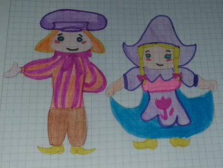

BRIEF LOOK TO A DUTCH
When we look for the first time about the Dutch we find that they are told that they are stingy and that they always like to ride a bike everywhere and get high mainly with marijuana, tall with blue eyes and finally they are always associated with cheeses since they are good making them.